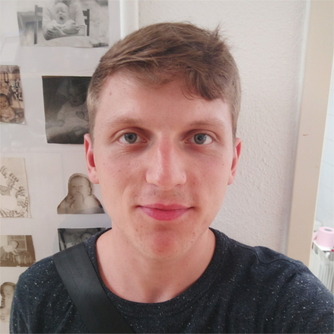

Franz Lisdat
Hi :D Mein Name ist Franz Lisdat und ich bin Medieninformatik Student an der HTW Berlin. Ich würde gern selber Spiele entwickeln als Designer und Programmer in einer Spiele Firma. Geboren wurde ich am 22.10.1995 und bin mit 2 älteren Geschwistern, Games Boys und einer Nintendo 64 aufgewachsen. Wie auch für viele sind Videospiele ein großer Teil meines Lebens. Sie haben meine Kindheit unglaublich geprägt. The Legend of Zelda hat meine Fantasie sehr angeregt, wodurch ich viel Zeit meines jungen Lebens damit verbracht habe mir Abenteuer auszudenken und wie der Held „Link“ diese zu erleben. Aber auch Mario und Pokemon, genau wie MegaMan und Bomberman habe ich viel alleine und mit meiner ganzen Familie gespielt. Sei es das einer spielt und alle zuschauen oder zusammen Mario Kart. Das Nintendo 64 spielen war immer etwas auf das ich mich freuen konnte. Als ich älter wurde habe ich immer wieder Ausschau nach anderen Spielen gehalten. Die Metroid Serie hatte mich sehr in den Ban gezogen aber es hat eine weile gedauert bis ich das sichere Boot von Nintendo verlassen habe. Ich hatte bei meinem älteren Bruder gerne zugeguckt während er Videospiele spielt und als er dann sich eine Xbox360 gekauft hatte, hatten Spiele wie Assassins Creed oder Fable mein Interesse an anderen Konsolen geweckt. Also machte ich einen Abstecher ein paar Jahre später und wurde von vielen neuen Franchises an den Bildschirm geklebt. Am meisten hatten mir Fable 1 & 2 und die Halo Serie gefallen, in welche ich viel Zeit investiert hatte. Auf der Games Com 2010 hatte ich dann eine riesige Bühne gesehen wo ein Publikum Leuten beim zocken zugeguckt hatte und wie bei einem Fussballspiel, wurde geschrien und mitgefiebert. Ich selber war so von der ganzen Situation beeindruckt, sodas ich, obwohl ich noch nie von dem Spiel gehört hatte, mich einfach dazu gesetzt hab und zugeschaut hatte. Es handelte sich um das Spiel League of Legends. Ich besorgte mir also einen PC und habe bis jetzt ca. 4000 Spielstunden in League of Legends investiert. Ich war so besessen besser zu werden und mich mit besseren zu mesen das ich sogar einem Team beigetreten bin und auch wenn nur kurz auf ein paar Turnieren gespielt hatte. Hin und wieder habe ich an Turnieren teilgenommen und die Szene verfolgt, sei es League of Legends oder Super Smash Bros oder auch KartenSpiele. Mich mit Leuten zu messen hat mir immer sehr viel Spaß gemacht. Mein Gaming Life hat sich also von Single Playern auf Nintendo und Xbox über zum PC entwickelt. Auch wenn ich mich sehr auf Multiplayer konzentiert habe, habe ich trotzdem ein großes Herz für Retro Spiele. Runderbasienerde Spiele machen mir kein Spaß mehr. Ich versuche immer kritischer Spiele zu betrachten um genau zu erkennen was gut aber auch schlecht ist, um daraus zu lernen und wenn ich Spiele selber herstelle dies zu beachten. Meine Lieblingsspiele sind: - The Legend of Zelda Ocarina of Time - Metroid Prime Metal Gear Solid 3: Snake Eater - Monster Hunter Freedom Unite - Halo 3 & Reach - Witcher 3 Entwickler: - CDPR - Retro Studios - Lucid Games - Team 5 Spiel was für mich nie Sinn gemacht hatte: - XCOM Auf welches Spiel freue ich mich am meistens: - Monster Hunter Worlds Welches Spiel mögen alle, aber du nicht? - Far Cry Serie Was wird Spiel des Jahres 2017? (GOTY) - Super Mario Odyssey